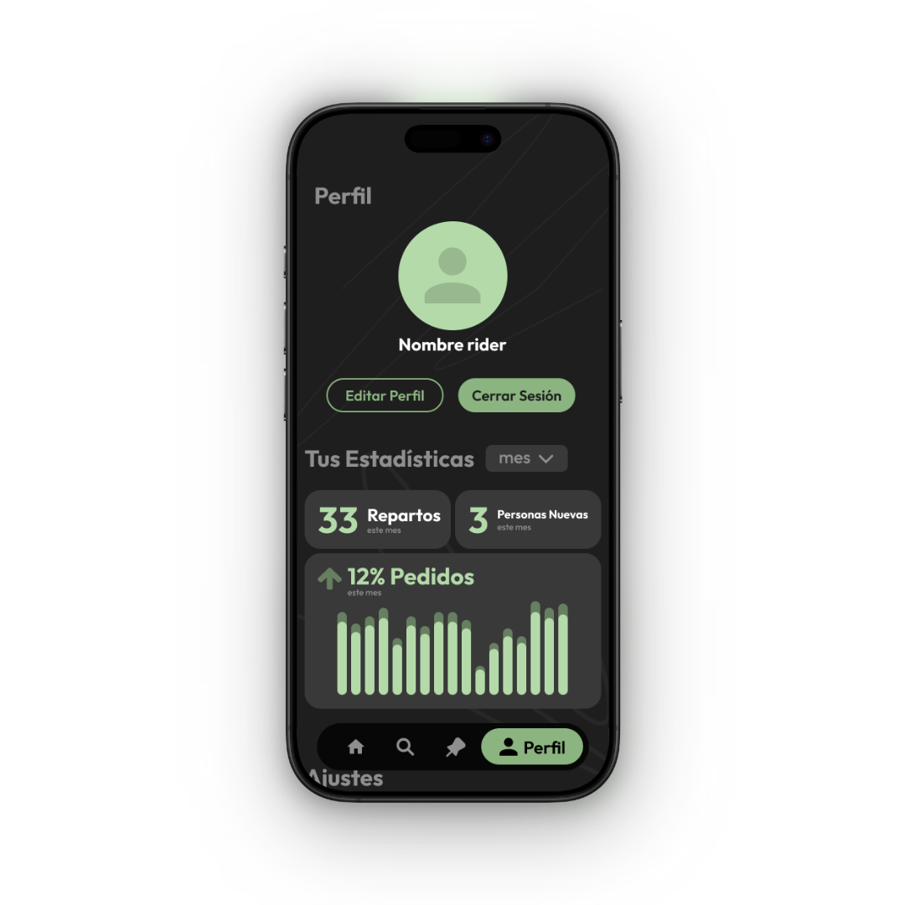
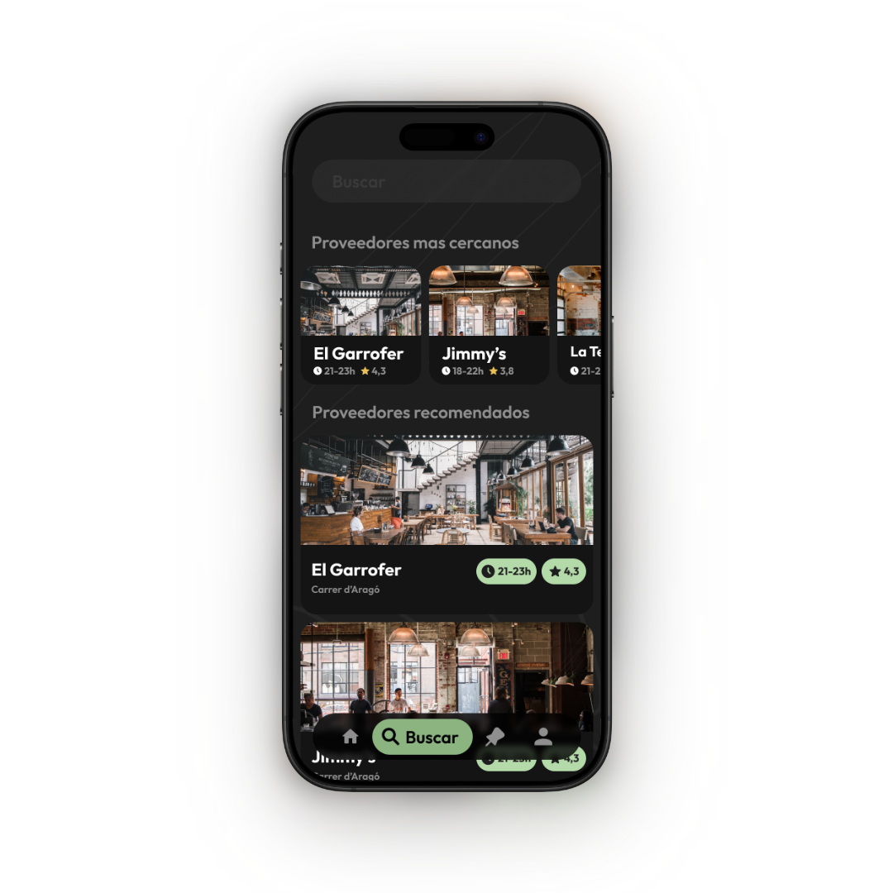
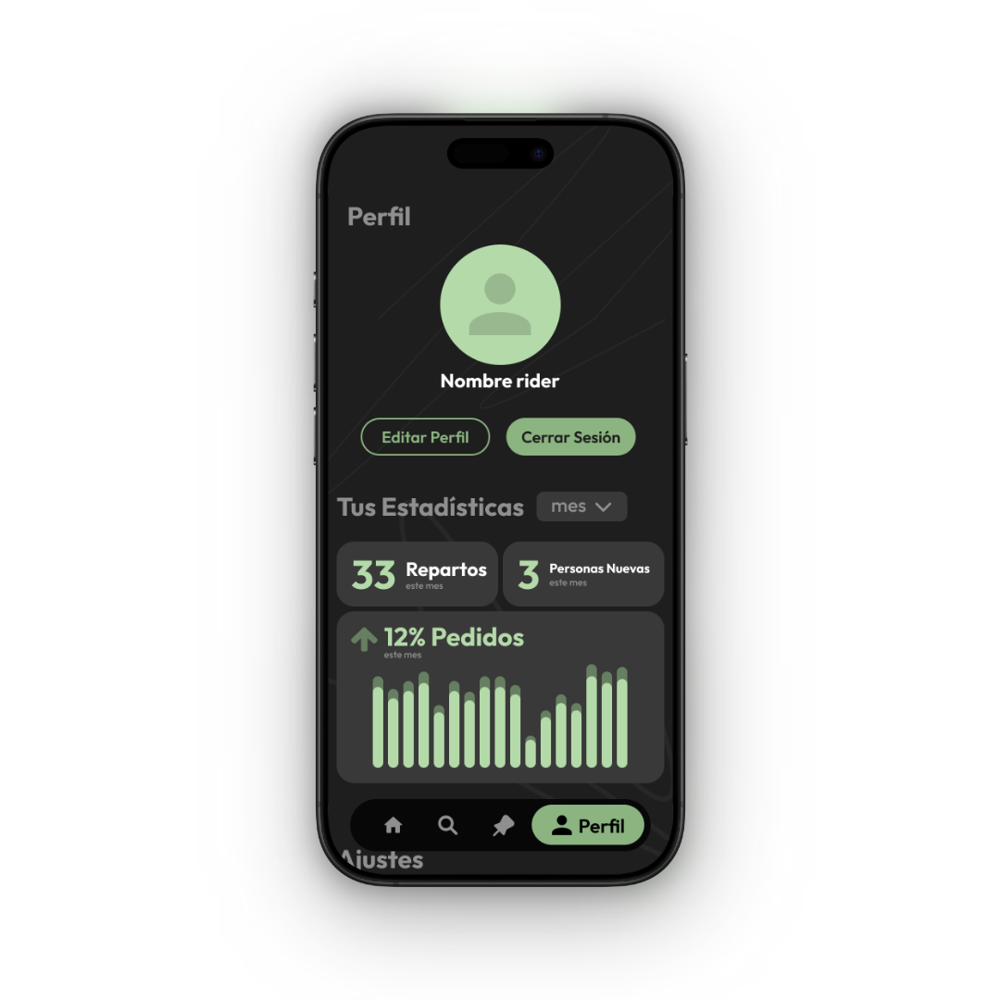
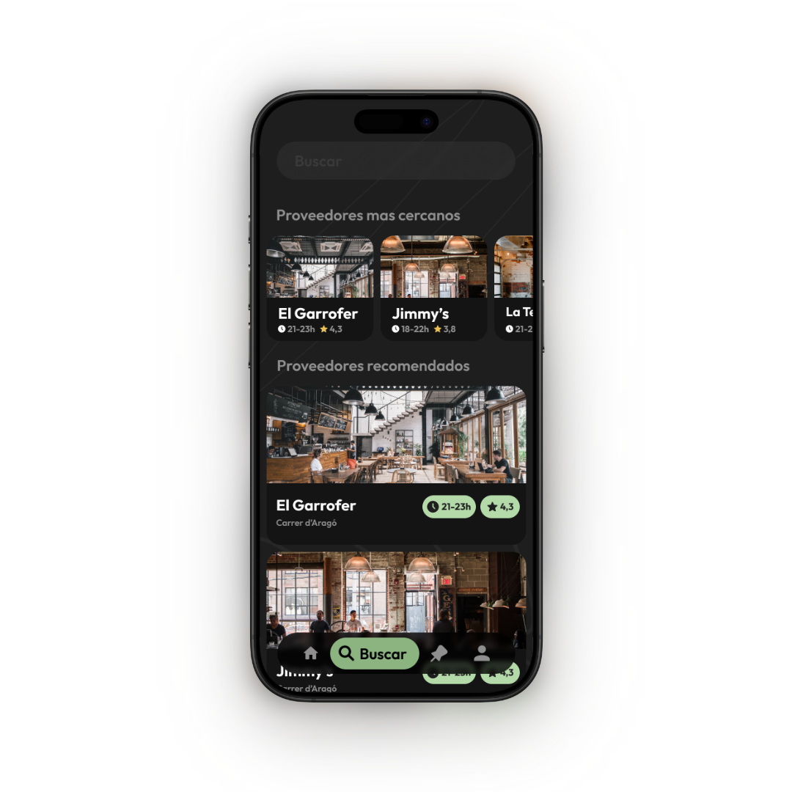

User Research
01. Defining the Dual Experience (Personas)
Since FoodLink operates as a two-sided marketplace, we began the project by developing distinct
personas to address the unique motivations and pain points of our two primary user groups:
- The "Solidarity Rider" (Volunteer): Driven by altruism but limited by time. Their primary need
was an intuitive map interface to locate recipients quickly without friction.
- The "Partner Restaurant" (Donor): Focused on operational efficiency. They needed a seamless flow
to publish surplus food packs in seconds during busy service hours.
02. Cross-Functional Usability Testing
To validate our assumptions, we conducted a comprehensive peer-review session involving students
from both Web Development (DAW) and Marketing courses.
- Methodology: We utilized a "round-robin" testing strategy where groups exchanged prototypes to
perform core tasks (e.g., "Publish a pack" or "Locate a recipient").
- The Value: While development peers focused on functionality and bugs, the marketing students
provided a critical layer of feedback regarding desirability and brand perception, simulating a
real-world stakeholder environment.
03. The Key Iteration: Emotional Design
The most impactful insight came from the marketing cohort. Feedback indicated that while the app was
functional, the UI felt too "transactional" and cold for a platform based on charity and human
connection.
The Solution: We iterated on the UI to introduce Emotional Design elements. We created a
friendly brand mascot to guide users through the experience. This wasn't just an aesthetic choice;
the mascot served to:
- Humanize the interface: Making the act of helping feel warmer and more rewarding.
- Reduce cognitive load: Acting as a visual guide during the onboarding and delivery confirmation
steps.


 


